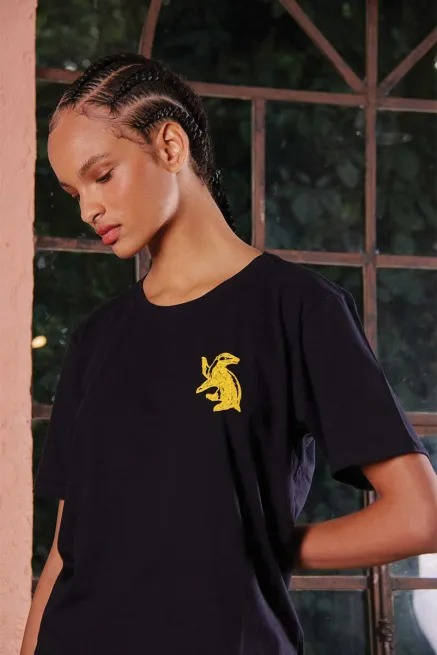
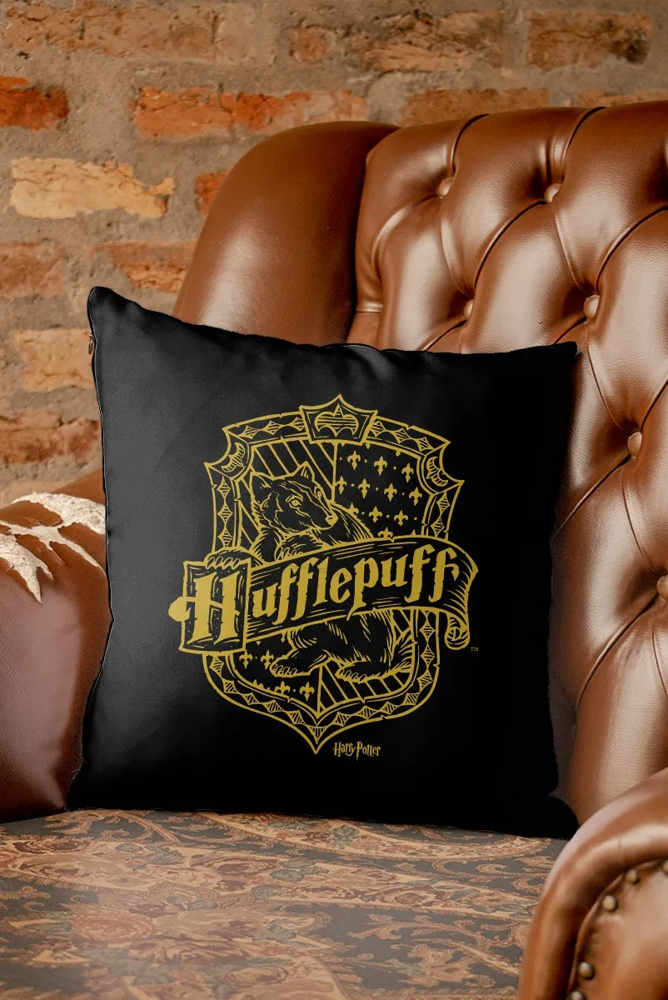

Bem-vindo a página da Lufa-Lufa de Hogwarts! Aqui, você encontrará informações detalhadas sobre uma das quatro casas da famosa escola de bruxaria e magia.
A Lufa-Lufa é conhecida por suas características distintas, como bondade, paciência e lealdade. Os membros desta casa são amigáveis e acolhedores, sempre prontos para ajudar os outros e criar um ambiente harmonioso. Eles valorizam as amizades e cultivam relações duradouras baseadas no respeito mútuo.
Se você é um estudante da Lufa-Lufa, pode esperar encontrar um lar caloroso e acolhedor. A casa valoriza a inclusão e a valorização das qualidades individuais de cada membro. Você encontrará colegas de casa solidários e dispostos a apoiá-lo em todas as suas jornadas.
A Lufa-Lufa é liderada pelo texugo, um animal que representa lealdade e trabalho duro. A cor da casa é amarelo e preto, e seu fundador foi Helga Hufflepuff, uma bruxa famosa por sua generosidade e espírito igualitário.
Na Lufa-Lufa, você terá a oportunidade de desenvolver suas habilidades mágicas com o apoio dos professores dedicados da escola. Além disso, poderá se envolver em atividades extracurriculares que valorizam o trabalho em equipe e a ajuda mútua, como o Clube de Herbologia e o Clube de Culinária Mágica.
Se você é gentil e valoriza a amizade, a Lufa-Lufa é a casa perfeita para você. Junte-se a nós e faça parte dessa comunidade incrível de bruxos e bruxas que buscam bondade, lealdade e magia.
Shop Lufa-Lufa

Camisa
Camisa
U$65

Camisa
U$65
Cachecol
U$30

Almofada